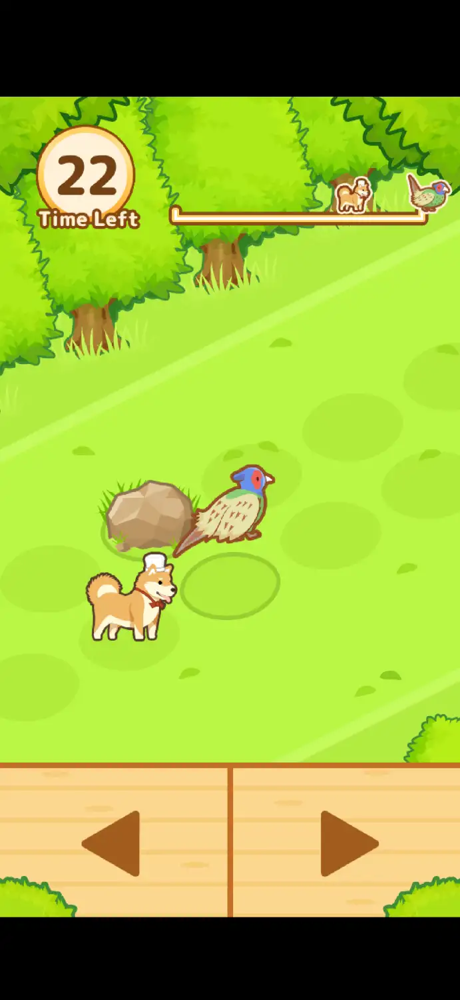
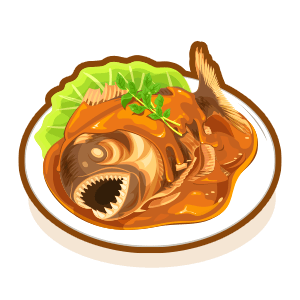

HuntCook: Catch and Serve!
HuntCook is an mobile game where you hunt wild animals, get their meat and cook them into various meals. You earn money by selling the meal to hungry customers, then you can use the money to purchase better equipment, and thus cook meals even faster.
The wild animal encounters are up to chance, whether you meet an encounter of an animal depends on your level of weapon, the higher the level, the more likely you'll meet the animal. And to capture an animal, you can either choose quick mode (which immediately captures it but produces less meat unless you have the Elite Vest) or full mode, where you spam left and right arrows to run towards the poor creature and dodge obstacles. However, if you don't encounter any animals, you'll meet Old Man Veggie instead, who gives you lots of ingredients, or Rocco, who either gives you a recipe or ingredients. Each hunt consumes one hunt point, it takes 1 hour on default to heal one point, and you can save 3 hunt points max.
To earn money, you have the main order and side order, which both gives you coins and experience. You can cook the meals based on what the orders want, and each meal requires different ingredients and time duration.
With the coins and gems (which are earned by achievements, login bonuses etc), you can unlock costumes, better weapons, better hunt items, cookware upgrades, and healing items (speeds up rest time). And if you are running out of one certain ingredient, you can also spend coins on them.
My experience
Seriously this game takes forever to 100%. I have been playing this game for like 10 years, there may be times I've lost my progress, but my current account is likely over 5 years old, and I only just beat the last mission on 12 Jan 2025 (Still not 100%). It is extremely difficult to speed up progress without spending your time on watching ads, and the weapon and cookware upgrades are so expensive, like I still haven't unlocked them all!
What's worse is the storage system, you can't hoard items until you have enough ingredients to not worry about them for ages, because you can only store a limited amount of item stacks. If you try to cook a ton of different meals, your storage will explode very soon, either telling you to expand (which cost gems and is very expensive) or simply sell the ingredients because you unlocked all the storage upgrades.
But on a better note, it is a game that doesn't give you too much stress (unless you are a perfectionist). Whenever I was extremely bored, I can always open the game and maintain my very neglected restaurant. As the game isn't very updated anymore, you don't have to worry about the extreme UI changes and new cool gamemodes that you aren't used to (cough cough Cookie Run). If you forget about the game for months or even years, when you open it again, everything in the restaurant is the same as the day you left it.
Moreover, it feels satisfying to sell food and see the money and experience go up, and a satisfying jingle plays when you complete an order, number bar goes whoosh. And as I unlocked Aloha Shirt, which increases critical chance (which duplicates a cooked meal), the chances of getting duplicates is a somewhat frequent basis. For meals which take forever to complete, this is extremely cruicial for time saves. When I need something like 5x Amazon curry, I might only cook 4 of them. By gambling this, I can save stove space, save ingredients and possibly save time! If I fail the bet... oh well lol.
Anyways, if you do play this game, PLEASEEEE contact me, friend me and set your ingredients share to carrots, I am running out carrots.
Credits
Images By: HuntCook